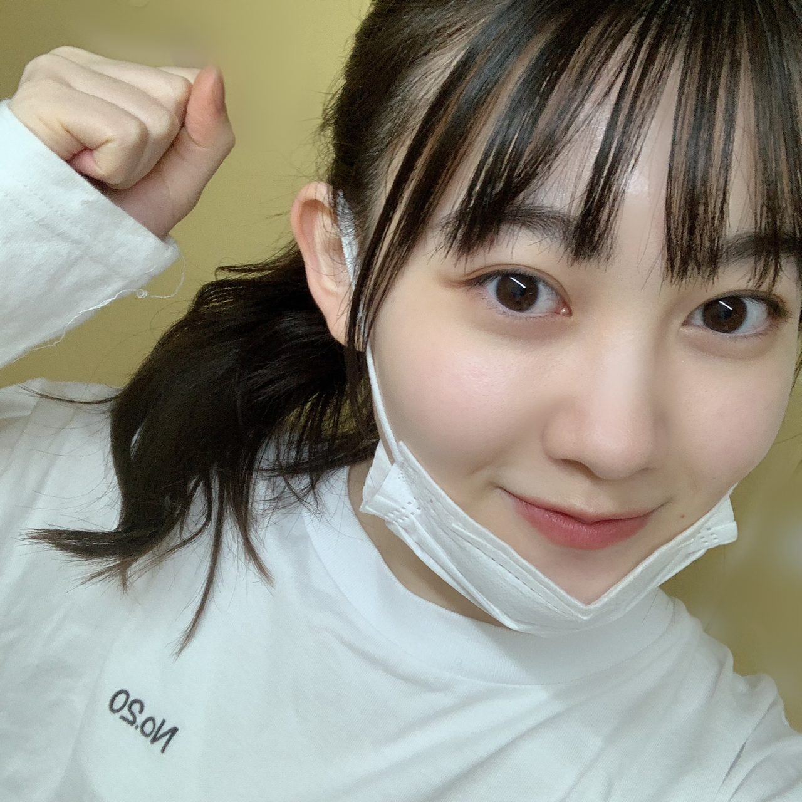
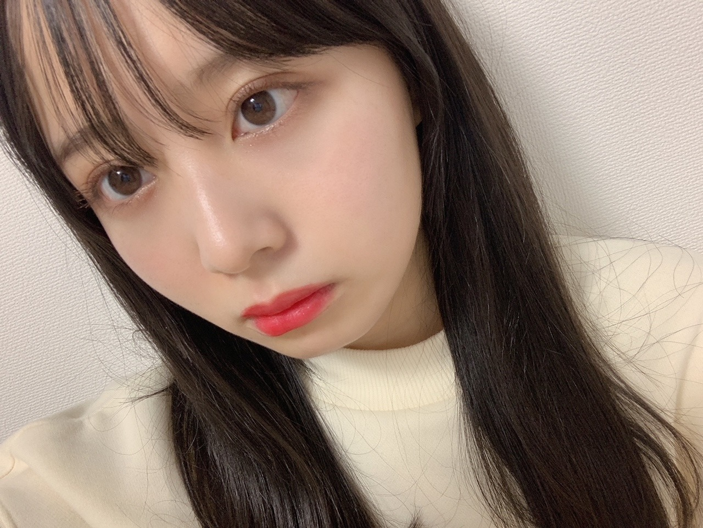
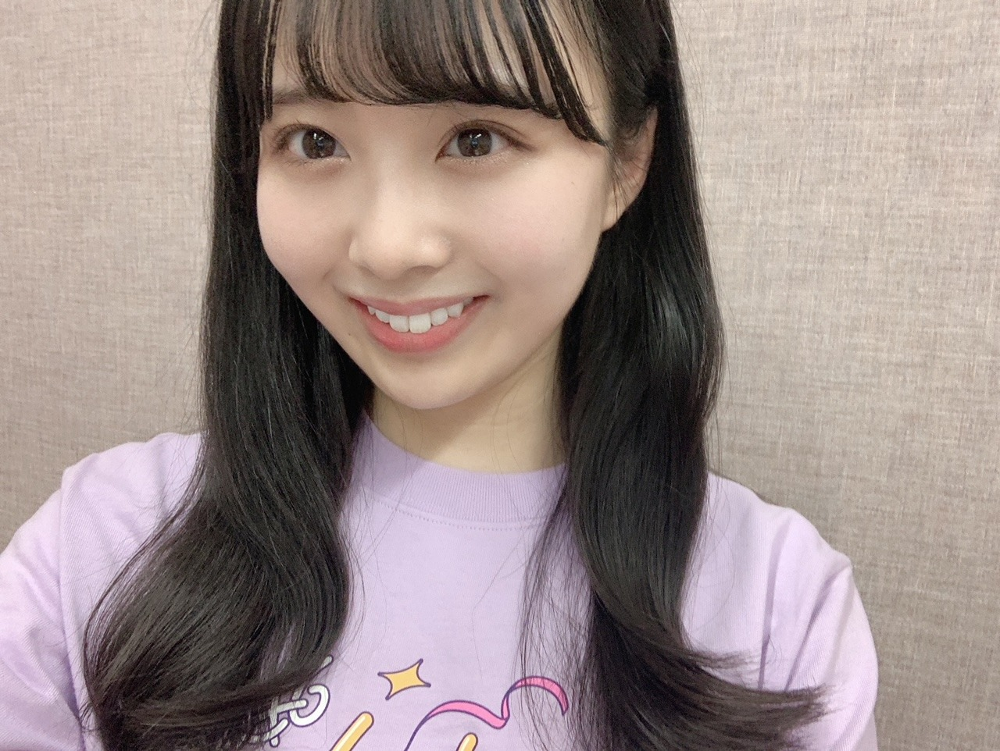
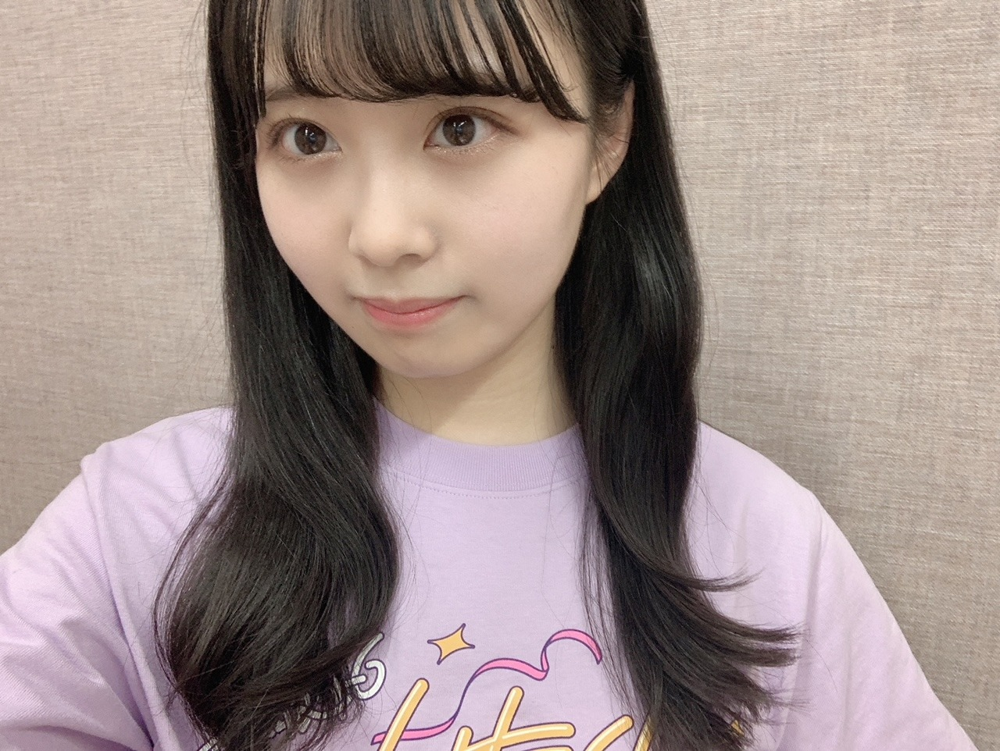
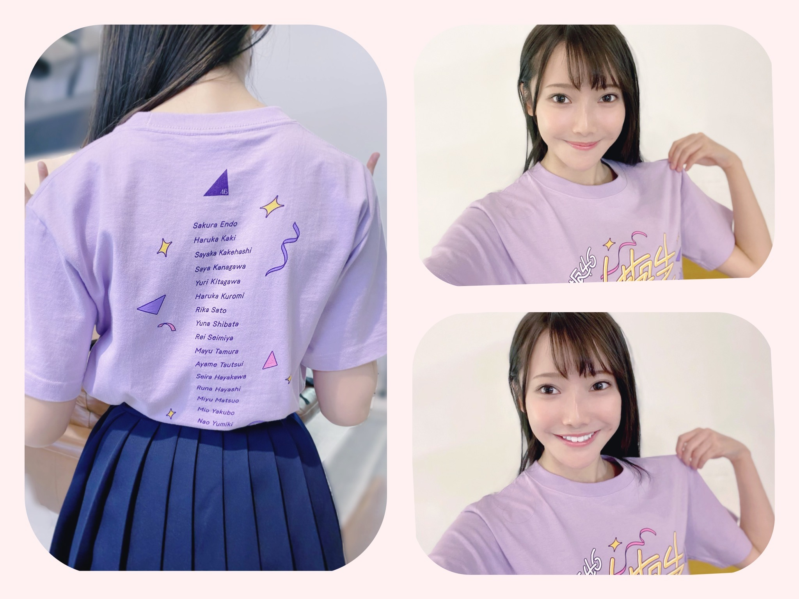

2020/1207Mon乃木坂46 4期生ライブ2020 ありがとうございました！弓木奈於
こんばんは！
こちらをクリックしてくださりありがとうございます☺️
乃木坂46 4期生
京都府出身
弓木奈於（ゆみきなお）です(* ॑ ॑* )⸝

「乃木坂46 4期生ライブ 2020」
本当に、ありがとうございました✨
4期生16人でライブをさせていただけた事に心から有り難い気持ちでいっぱいです。
私は、乃木坂46に加入する前からずっと
先輩方のパフォーマンスに何度も支えていただきました。
今回セットリストを見て、一曲一曲にその頃の思い出があってすごく蘇りました。
『ロマンティックいか焼き』
中学生の時に乃木坂46がきっかけで心の友ができました。
4人でいつも一緒にいたのですが、4人のうちの1人、放送委員の友達が運動会の時に『ロマンティックいか焼き』を流してくれて
放送委員の友達が座っている場所に目掛けて3人で『ロマンティックいか焼き』のサビのポーズをしたという思い出があります☺️
その日から4人が集まったら『ロマンティックないか焼き食べ隊』というグループ名にしよう！と決めたり
すごく幸せな中学校の思い出です(∩ˊᵕˋ∩)･*
そんな信頼できる友達と仲良くなるきっかけをくださった曲の一つ『ロマンティックいか焼き』をパフォーマンスさせていただく事が出来て
この上ないほど、何と言っていいのか分からないほど幸せで嬉しかったです...✨
ユニットのコーナーでは、
柴田 柚菜ちゃん、掛橋 沙耶香ちゃん、筒井 あやめちゃんと一緒に
『渋谷ブルース』
を披露させていただきました。
今まで生きてきて、カラオケもあまり行った事がなくて、行ったとしても歌わずに聴いている方が好きでした。
でも今回、歌う事がすごく楽しいと心から思いました。
それは
先生やマネージャーさん
柚菜ちゃん、あやめちゃん、沙耶香ちゃんが引っ張ってくれて
たくさんの事を教えてくださったり、歌う事の楽しさを教えてくださったからです。
先輩方の大切な曲を歌わせていただける事への感謝の気持ちや恐縮な気持ち、不安な気持ちでいっぱいでした。
でも、歌わせていただける事に感謝して、精一杯頑張りたいと思いました。
先輩方やファンの皆様が大切に愛していらっしゃる『渋谷ブルース』を歌わせていただけた事
本当にありがとうございました。✨

『4番目の光』
16人でパフォーマンスさせていただきました。
聖来ちゃんの「もともと16人だけど、訳あって5人が遅れて合流しただけだと思っています」という温かいコメントに思わず涙が溢れてしまいました。
本当に本当にありがとうございます。
私もはやく4番目の光になれるように、自分自身の光を手に入れられるように全身全霊で頑張ります。✨
ステージを見させていただいた時改めて
たくさんのスタッフの皆様が素敵なセットを作ってくださって
感謝の気持ちでいっぱいになって、涙が溢れそうになりました。
どんなに忙しくても、努力と追求心を持って、いつも可愛い笑顔や、優しい空気で包んでくれるさくちゃん✨
どんな時も皆の事を考えて、熱い気持ちで、でも絶対にユーモアは忘れない心から優しいかっきー✨
急にぎゅーってしてきてくれたり、私の話を「面白いよ！」と笑ってくれたり、小動物感があるけど、いつも私たちの事を積極的に包み込んでくれる優しさで溢れている沙耶香ちゃん
ダンスの事を質問したら笑顔で優しく教えてくれたり、一緒に話してると心地い空気を作ってくれて、初めて話した日から変わらずずっと優しく寄り添ってくれるやんちゃん
そこに居るだけで周りを温かくしてくれて
アフター配信の時に、私が悠理ちゃんにぎゅーって出来るようにさりげなく手を回してくれた優しい悠理ちゃん
いつも周りのみんな一人一人のことを考えてくれていて、「本当は人見知りなんだ」と言っていたのにいつも勇気を持って皆に声を掛けてくれる優しい黒見ちゃん
追求心を忘れず、私の少しの変化も真っ先に気がついてくれて声をかけてくれる優しい璃果ちゃん
一緒にいると無意識に朗らかにさせてくれる力がある柚菜ちゃん
それは柚菜ちゃんが優しくて朗らかで温かいからだと思います☺️
笑顔いっぱいで元気な雰囲気にしてくれたり、癒してくれて
発言する事は何十倍も勇気がいる事なのに、いつも勇気を出して先陣を切って、私達を引っ張ってくれるレイちゃん
いつも和やかな雰囲気を作ってくれたり、周りをしっかりと見て皆を支えてくれて
何でも話しやすくて、計り知れないほどたくさん努力や挑戦をしている真佑ちゃん
ダンスを教えてくれたり、どんな話でも優しく答えてくれて
いつもホワホワした笑顔で癒してくれて、優しく包んでくれるあやちゃん
どんな時でも私たちのことを想っていつも率先して行動してくれて、とても勇気がいる事なのに、思っている事をまっすぐ伝えてくれたり、教えてくれたり、何事にも一生懸命で、愛が深い聖来ちゃん
思ってる事をちゃんと伝えてくれて、いつも支えてくれて、私の世界に色をつけてくれて
素直に正直に全部話せたり一緒にふざけたり出来る存在、林
林の綺麗な歌声を聴く事が出来て、歌に込められた想いに袖で聴いていて涙が出そうになりました✨
5人と一緒にダンスを何度も丁寧に教えてくれて
いつも私たちのために気遣ってくれたり声をかけてくれたり明るい空気を作ってくれたり、優しすぎる矢久保ちゃん
僕の衝動を躍らせていただいた時、ペアダンスの所でニコッと微笑んでくれて
そんな矢久保ちゃんの優しさにとても安心しました☺️
一緒にいると居心地が良くて、考え方も、ダイナミックなダンスも、しなやかなダンスも、クシャッと笑う笑顔も、冷静なツッコミも全部が大好きな、いつもそばで支えてくれる美佑ちゃん
全員が優しいからこそすれ違ってしまうこともあったけど、
たくさん言葉を交わして
１つになれたような気がして本当に本当に嬉しかったです。
眠りにつくまでずっとずっと4期生ライブ2020のことを考えていました。
覚えが悪かったり、不恰好な自分に落ち込んだり申し訳ない気持ちになった時もありました。
でも、そんな時間も全て有り難くて幸せでした。
OVERTUREから、アフター配信まで、全て
先輩方の、グループの大切な曲をパフォーマンスさせていただける事への感謝の気持ち、重大さ責任を持って頑張りたいと思い、心を込めてパフォーマンスさせていただきました。
今回皆さんに直接お会いする事は出来ませんでしたが、
ライブ中はもちろん、始まる前も
「皆さん、ご飯食べながら見てくださるのかな？」
「テスト中かな？」
などと考えていました☺︎笑
見てくださっている皆さんの事をずっと想っていました(∩ˊᵕˋ∩)･*
毎日ブログなどでいただいている、皆さんの温かいコメントを読んで「よし、頑張ろう！」といつも支えていただきました。
本当に、本当に
いつもありがとうございます。✨
たくさんの皆様と素敵な、かけがえのない時間をご一緒する事が出来て
本当に、本当に
有り難くて、幸せです。
不器用で、不恰好で、ちょっとネガティブが見え隠れしてしまうまだまだな私ですが、
乃木坂46 4期生 として
たくさん成長出来るように、
これからも自分自身変化できるように、
学ばせていただいたたくさんの事を心に持って、
日々いただいている感謝の気持ちをお返し出来るように精一杯...
無限大に頑張ります！
これからも全力で何事にも取り組んでいきたいです！！
皆の温かさが心から大好きです。
乃木坂46が、4期生が
心から大好きです。


そして
26thシングル 『僕は僕を好きになる』 発売記念 オンライン ミート＆グリート（個別トーク会）
へ参加させていただきます✨
ずっと待ち望んでいた、
オンラインミート＆グリート
とてもとても嬉しかったんです！
早く皆さんとお話ししたいです˙˚⸜(* ॑ ॑* )⸝˚˙
---------- ｷﾘｶｴ ---------
本日発売の『週刊ヤングマガジン』さん
2・3合併号
に黒見明香、佐藤璃果、林瑠奈、松尾美佑、弓木奈於の5人のグラビアを掲載していただきました✨
齋藤飛鳥さんが表紙を務めていらっしゃいます✨
お団子ヘアにショートパンツにパーカー姿はマネージャーさんからも「新鮮！」と言っていただくほど、レアです( ｰ̀֊ｰ́ )✧
とても楽しく撮影していただきました✨
笑いすぎてほっぺた痛くなりました(* ॑ ॑* )⸝笑
今日は写真がいっぱいなので、次のブログでオフショット載せますね☺︎
是非よろしくお願いします(∩ˊᵕˋ∩)･*
---------- ｷﾘｶｴ ---------
そして、昨日
乃木坂46の「の」さんに出演させていただきました！
現在令和何年なのか、時空が歪んだりもしましたが...
またまた岩本蓮加さんとお話し出来た事が本当に嬉しかったです✨
そして先週
『乃木坂46のオールナイトニッポン』さんに出演させていただきました( *ˊᵕˋ ) ⁾⁾
新内眞衣さんが
始まる前から私の現在の話を聞いてくださったり、色々なジャンルのお話をしてくださったり、これからの事をアドバイスしてくださったり
本番中も緊張している私を優しくもユーモアたっぷりにフォローしてくださって、本当にありがたい気持ちでいっぱいでした✨
すごく楽しくて、時間があっという間で、ずっと続けばいいのになぁ...と思いました(´･_･`)♡
聴いてくださった皆さん、ありがとうございました✨
そして先週の『沈黙の金曜日』のゲストは
鈴木絢音さん！
『弓木奈於のヒロインになりたい！』というコーナーで、絢音さんがヒロインの親友役の台詞を読んでくださる時間があったのですが
さすがの絢音さんです✨勉強させていただきました✨
現在、舞台「ナナマルサンバツTHE QUIZ STAGE O」
稽古中なので、たくさん学んで
皆さんに楽しんでいただけるように頑張りたいです！
次は、黒見ちゃんですᕙ( ˙-˙ )ᕗ
長くなってしまってすみません！
最後まで読んでくださり、ありがとうございました✨
お体に気をつけて、素敵な日々をお過ごしください✨☺️
2020/1206Sun4！！ 松尾美佑
高校2年生
16歳
松尾美佑です¨̮
今日はなんの日ですか？
そうです！
今日は4期生ライブの日です！！！
わーーーい！！
ついに来ちゃいましたよ今日が！！
楽しみな気持ちと緊張と！
もう心臓から目が飛び出ちゃいそうな勢いです！

さて！
話は一旦過去に戻りまして
のぎおび4期生ウィーク、楽しんでもらえましたでしょうか！
まゆみゆは、なんとのぎおび選手権でビリになっちゃったので罰ゲーム #のぎばつ をしました
( ᵕ ᵕ̩̩ )
一昨日のかっきー、せーらちゃん、まゆちゃんの のぎおびに罰ゲームのみ参加させて貰いました(、._. )、
プロポリス
本っ当に美味しくなかった！！
です
でも喉には良いらしいので
皆さんも是非(^^)
尼崎姉妹さんな2人をあんな至近距離で拝めて嬉しかったです

物凄い小さな誰も気づかない情報を置いておきます。
髪の毛を3cm切りました
( ˙ỏ˙ ) ほへーですね
そして！
1月の生誕記念グッズが発表されました〜
うさこあらと共に空にパワーを送りました〜
良かったらチェックしてみて下さいˊᵕˋ
そして！その2
レコメン！乃木坂四期生メガ盛り祭り
という事で12月7日から2週間に渡って4期生がレコメン！に登場させて頂きます！
ちなみに私は
12月9日に
大好きな柚菜ちゃんとレイちゃんと3人で登場します！
是非聴いて頂けたら嬉しいです！
明日は〜
なお〜〜〜〜〜〜〜〜〜
今日のアドベントカレンダーのチョコはホワイトチョコだった！
さぁ！
もう！もう、今日ですよ！？
いよいよですね(*¨*)
気が早すぎるのですが、
数時間後には始まって、そして終わっちゃう事に既に凄く寂しさを感じたりしちゃっていて、
一緒に楽しんで絶対に忘れられない時間にしましょう！

それでは！
またあとで会いましょね〜( Ꙭ )/''
ミュウでした¨̮

あとでねっっっっっ( Ꙭ )/''( Ꙭ )/''( Ꙭ )/''
2020/1205Satお疲れ様です。楽しみいっぱいな林瑠奈です。
本日もお疲れ様です。
遅くなり申し訳ありません。
乃木坂46、4期生の林瑠奈です。
華咲くセブンのティーンの林瑠奈です。
負けるなしょげるな林瑠奈、今日も1日頑張るな
(ピンポーン)
45周目となりました、ブログリレー。
何度同じことをするんだと思われるかもしれません。
ブログ、書いたのに消えました。
でもね、前回と違うことがありまして
今回はなんとなく「あー消えてそうやな」って思ってたんですよ。
マーフィーの法則を実感した瞬間でした。
本当に気をつけます。
♪:*:･･:*:･･:*:･･:*:･･:*:･･:*:♪:*:･･:*:･･:*:･･:*:･･:*:･
火曜日、くろみちゃんと共にのぎおびを担当させていただきました。
見てくださった方、ありがとうございます。
普段からあんな風に雑な関係なのですが、驚かれた方もいましたでしょうか。
私としましては、もっとくろみちゃんの良さを引き出したかったなというのが正直な思いであります。
また2人で何かやらさせていただくことがありましたら、もっとエンジンかけますのでよろしくお願いします！

倍数コンビ。
♪:*:･･:*:･･:*:･･:*:･･:*:･･:*:♪:*:･･:*:･･:*:･･:*:･･:*:･
レコメン！乃木坂四期生メガ盛り祭り
12月7日（月）：掛橋、黒見、璃果
12月8日（火）：筒井、林、矢久保
12月9日（水）：柴田、清宮、松尾
のメンバーが出演致します。
いつも拝聴しているレコメン！さんに出させていただけるということで、本当に嬉しさ全開です。
ありがとうございます。
是非聴いていただけたらと。
26thシングル、『僕は僕を好きになる』
オンラインミート＆グリート（個別トーク会）の開催が発表されました。
【日程】
（１）1月31日（日）
（２）2月7日（日）
（３）2月14日（日）
（４）2月27日（土）
（５）3月14日（日）
（６）3月21日（日）
第2次受付
2020年12月10日（木）14:00～2020年12月11日（金）14:00まで
https://www.nogizaka46.com/smph/news/2020/12/-4626th.php
上記の日程で開催させて頂きます。
今から緊張が絶えませんが、是非応募していただけると幸いです。
なんだか、お知らせすることが多くて嬉しいです。
♪:*:･･:*:･･:*:･･:*:･･:*:･･:*:♪:*:･･:*:･･:*:･･:*:･･:*:･
M-1グランプリ2020のファイナリストが決まりましたね。
前回大会に引き続き
見取り図さん
ニューヨークさん
御二組も決勝進出ということで、わたしはテンションが上がりに上がっております！
2018年大会を引き金に好きになった見取り図さん。
当時は決勝初出場だった御二人が、
『決勝常連！』と言われていること。
"エモい"という言葉の使い所はここにあったのか、というほどエモいです。
18〜19年大会の間に、リリーさんの髪型がお洒落になっていると感じたのは、わたしだけでしょうか。
今年はどんな装いなのかも含めとても楽しみです！！
そして、ニューヨークさん！
わたしが色々な場で好きと言わせていただいている御二方。
さらばさんとお話しするときは、必ずと言っていいほどニューヨークさんの話になります。
わたしがニューヨークさんを好きだからというのもあるんですけど、
森田さんのニューヨークさん愛が凄いんですよ。
なんやかんや言うて好きやでスタイル。
キングオブコント2020も準優勝をとられたということなので、M-1グランプリでのご活躍も楽しみです。
人生の楽しみがまた一つ増えました。
♪:*:･･:*:･･:*:･･:*:･･:*:･･:*:♪:*:･･:*:･･:*:･･:*:･･:*:･
4期生ライブまで残すところあと1日となりました。
とにかく全力、全力の中の全力で頑張りますので何卒宜しくお願い致します！！
色々と話したいことは沢山ありますが、そちらはライブが終わってからということで。
明日はミュウちゃんです。
前よりもっともっと仲良くなったね。
明日もよろしく！頑張ろう！！
アディオス！！！！！！！
P.S.さやたんとさやかにやっとお誕生日渡せました
かしこ
2020/1204Friマフラーを巻いた少女が。佐藤璃果
こんにちは
乃木坂46 (新)4期生 岩手県出身
佐藤璃果です。


お元気ですか？？
最近購入したリップが赤すぎてびっくり
しました。あまり買わない色味だったので、
お仕事じゃない時に使っていきたいです。
心が爆発しないように、
胸に貯めた想いを無駄にしないように
前に進みたい。
すれ違う人は案外優しいかもしれない
目に見える全てのものが
本当じゃないって分かってる。
でも、信じたいってどこかで思っている。
信じたい。
~~~~~~~~~~~~~~~~~
｢僕は僕を好きになる｣
オンラインミート＆グリート（個別トーク会）の開催が発表されました！！
【日程】
（１）1月31日（日）
（２）2月7日（日）
（３）2月14日（日）
（４）2月27日（土）
（５）3月14日（日）
（６）3月21日（日）
第2次受付
2020年12月10日（木）14:00 ～ 2020年12月11日（金）14:00 まで
https://www.nogizaka46.com/smph/news/2020/12/-4626th.php
みたいです！
直接会えなくて寂しいのは
もちろんそうですが、
オンラインでも会いに来てくれ無かったら
もっと寂しいので、
気軽に応募して下さったら嬉しいです︎︎☺︎
皆さんとお話出来る日をずっとずっとずっと
待っていました。
今まだ皆さんに伝えきれていない
感謝の気持ちを伝えたり、
心の距離感を縮められたら
いいなと思っています( ˙ᵕ˙ )
私はずっと地方住みで、
都会の握手会やライブにすごい憧れを
持っていたからそういう地方の方も参加しやすい素敵なイベントだなと
思っております！
待ってるね。
ドキドキ。
~~~~~~~~~~~~~~~~~

1枚目笑ってるけど、ロゴが入っていない

2枚目ロゴが入っていないと思い、
少し引きで撮ってみる。
結局写っていない。
皆さん、グッズお揃いにしましょうねー！
のぎおび、
ゆりちゃんとでした！
ありがとうございました。
のぎおび選手権悔しい( ˙ᵕ˙ )
でもゆりちゃんと
テレパシーで繋がれたから良かった( ˙ᵕ˙ )
雨の湿気に弱いんですよ、、
歩いて来たら湿気に負けてた( ˙ᵕ˙ )
~~~~~~~~~~~~~~~~~
｢レコメン！｣さんに出演させて頂きます！
❁レコメン！乃木坂四期生メガ盛り祭り❁
12月7日（月）：掛橋、黒見、璃果
12月8日（火）：筒井、林、矢久保
12月9日（水）：柴田、清宮、松尾
のメンバーです！
私は初日ですね！
楽しみにしましょうー！
~~~~~~~~~~~~~~~~~
最近質問に答えられなくてごめんなさい。
ライブが終わったら沢山答えますね！
次にブログを更新する日には
ライブが終わってるんですね。
色んなことが起こる日だともう予感しています。それでも最後までやり遂げて、
素敵な一日にしたいです。
ライブ終わったらもっと
皆が好きになってくれていたら嬉しいな。
~~~~~~~~~~~~~~~~~
11月30日、伊藤純奈さん
❁お誕生日おめでとうございます❁
純奈さんの響く歌声がとても素敵だなと
心の底から何度も思いました。
沢山の方から愛されている
綺麗なお姉様という印象です！
優しそうな方だなぁとずっと
おもっていました！
素敵な一年になりますように。
~~~~~~~~~~~~~~~~~~~
明日はるなぴです。
林のリハ着すき！
~~~~~~~~~~~~~~~~~~
皆さんにとって
素敵な1日になりますように。
またね。
#45 りか
それでは！！ばいっ！！
2020/1203Thu初めましての握手会 ☺︎ 黒見明香(16)
ココを見つけてくださり ありがとうございます♪
乃木坂46 新４期生の黒見明香です。
すこーしだけ自己紹介させてください☺︎
♪:*:･･:*:･･:*:･･:*:･･:*:･･:*:･♪:*:･･:*:･･:*:･･:*:･･:*:･･:*:･♪
黒見 明香（くろみ はるか）
2004年1月19日生まれ 16才
香港生まれ・東京都出身です
あだ名： くろみん・黒見ちゃん
3の倍数9・6・3(くろみ)
と覚えてもらえたら嬉しいです♪
＊
↓頂いたコメントから
◎猫舌SHOWROOMで起きた黒マジックの黒歴史て...丁度じゃん！

-:-:୨୧:-:- 林ちゃんとリラックスお部屋トーク✨楽しかったー♬ るなぴのサイリウムはピンクだよー！
本当に！恥ずかしすぎる... ｡ﾟ(｡ﾉω＼｡)ﾟ｡笑
♬ *。♩*。♬
今夜の「のぎおび」は
♪:*:･･:*:･･:*:･･:*:･･:*:･･:*:･♪:*:･･:*:･･:*:･･:*:･･:*:･･:*:･♪

-:-:୨୧:-:- 大好きな皆んなとお話しできる日が決まったよー！嬉しいナ〜♡
【 決定！『僕は僕を好きになる』 発売記念
もちろんだよー！
＊
いつの日か、"真夏さんリスペクト軍団"に

ダンスを踊る時の手の使い方や体の使い方もとっても綺麗で、女性らしい姿に憧れています。
◎林瑠奈ちゃん♡
オーディションの時から番号が隣で、名前の数字も4の倍数と3の倍数と、一番長く知っている大好きな林ちゃん。
◎松尾美佑ちゃん♡
大人っぽい見た目と、明るくて可愛らしい内面も大好きです。
◎矢久保美緒ちゃん♡
わからない時にもすぐに教えてくれて、たくさん助けてくれている優しいみっちゃん。
いつもモバメも一生懸命で、みっちゃんの笑顔が大好きです。落ち着いたら、早く一緒にお茶飲みに行きたいな〜♬
◎弓木奈於ちゃん♡
お話しするのが上手なおっとり奈於ちゃん。
↓昨日発表されたグッズはこちらだよ✨
♪:*:･･:*:･･:*:･･:*:･･:*:･･:*:･♪:*:･･:*:･･:*:･･:*:･･:*:･･:*:･♪

-:-:୨୧:-:-お出かけがむずかしい今、いつか見た12月の景色だよ〜 ☺︎寒いけどなんだかドキドキするね✨
ブログやお手紙で、たくさんのコメントや感想送って下さり
本当にありがとうございます✩︎⡱
今回、初めてコメントしたよー！というあなたも、
いつも近況を教えてくださるあなたも、
大切な時間を使ってお話しして下さり
本当にありがとうございます✨
あなたに出逢えた奇跡に、感謝しながら、
大事に、一つずつ全部読ませて頂いています((〃ω〃))
皆さんのことを知ることが出来る、
私の１日の中で『１番幸せな時間』です♩
いよいよ1月から！個別トーク会で、
＊
寒い日が続いて、仕事や勉強が忙しかったり、
なんだか体調イマイチだよー、疲れちゃったよーって方も
本当に、お疲れ様でした✩︎⡱
きっと心も、身体も、しんどい時もあるかと思います。。
どうぞ、皆さんが 少しでも
ひとときリラックスできますように...✩︎⡱
と願っています(*´-`)
初めて会える日を、楽しみに待っています♪
＊
明日はいつも送ってくれる
読んでくださり、本当にありがとうございます☺︎
次回も、会えたら嬉しいなぁ✨
またねヾ(･ω･*)
くろみはるか☺︎
☆ 明日のあなたのラッキーナンバー：❾ と ❸
♪:*:･･:*:･･:*:･･:*:･･:*:･･:*:･♪:*:･･:*:･･:*:･･:*:･･:*:･･:*:･♪
・
・
・
＜ちょこっとアンコール♬笑＞
〜クロミ・ル・フィーユ〜
（クロ見るFeel YOU☺︎）
↑頂いたコメントから〜ありがとう♪
♬ *。♩*。♬
ココからおまけだよ〜笑
楽屋裏でお喋りしてるような感じなので、
気が向いた時にでも〜↓☺︎
♬ *。♩*。♬
⚫︎みおなちゃんが乃木坂46で過ごした時間は、卒業した後もずっと続いて繋がっていくんですヨ！きっとあなたの中でも生き続けていきます！
＊
⚫︎くろみんファンの総称はくろミスがいいです！どうですか？
（くろみん：くろみんと みん：みんなの ゼミ：ゼミナール）
♬ *。♩*。♬
⚫︎サイリウムヌンチャクが届いたよ。
振動を感知して自動で発光。7色に自動で変色。
ちなみに、商品の説明画像では棍の色が紫と緑に光ってた。偶然の妙と呼ぶか運命と呼ぶか...
♬ *。♩*。♬
猫舌SHOWROOMのお話
⚫︎くろみんも「乃木坂４６のバッジ」を付けているからには、「優しくて、強くて、逞しい」乃木メンにならないとね。
美佑ちゃん♡はとっても褒め上手で、4期生のみんな良いところを見つけるのが上手いなぁって感じてるよ✨
いろんな能力が足りないから、なんとか、皆んなの心に寄り添える人になれるよう、バッジに恥じないメンバーになれるよう・・・
♬ *。♩*。♬
⚫︎ まさか、乃木坂でプロスピをやっている人がいたとは驚きです❗
◯プロスピ実はやってるよ〜！
一緒に楽しもうね☺︎
⚫︎ 特にイベントの交流戦はコンボ上昇量が
かなり大事になってくるから次きた時に
意識してみてね！
◯うん！ありがとう！より意識してみるね！
⚫︎ プロスピ、ドラフトスカウトは引く？
◯年末年始に向けて今は我慢するよ！
⚫︎ くろみんって、コンパス(ゲーム)やってる？？
◯やってないよ〜 どんなゲームなのかな？
⚫︎ 自分もプロスピ頑張ります。！
◯うん！一緒に頑張ろうね☺︎
⚫︎ くろみんは空き時間によくゲームしているんだね。
プロスピのイベント時間がかかるもんね。
◯うん！実はよくイベントとか試合やってるよ〜
⚫︎ くろみんはゲームで野球やサッカーをやってるけど、実際に試合を見に行ったりするのかな？
◯見に行きたいなと思ってるけど、何回かしか行ったことないよ〜！今度行きたいな☺︎
⚫︎ 野球も好きなの？
◯うん！野球見るのも好きでプロスピもやってるよ〜☺︎
⚫︎ くろみんちゃんは、スポーツゲームを
することが多いのかな？
◯プロスピとウイイレどっちもスポーツゲームだね！確かに多いかも！あなたはなんのゲームをすることが多い？
⚫︎ プロスピをする時間はないかな・・・
イベントをする時間の余裕が出来ますように。
◯最近プロスピイベントできてないからまたできるようになったらブログでも書くね！
あなたも楽しみながら頑張ってね☺︎
⚫︎ 好きな動画は「まとめるほどではない」まとめ、実況の放送席にファウルボールが2回も飛んでくる動画が好きです！ゴーンヌ&グッバ〜イ集が先日UPされたの知ってる？
◯うん！私も見たことあるよ！パ・リーグTV面白い動画多いよね！同じ動画楽しんでいて嬉しいな〜♬
⚫︎ ブログ更新されてからこれを書き込むまで乃木フェス頑張ってました！
くろみんレーンで1位獲りました！(^O^)／
サイン入りのグッズ凄い楽しみです！！
ツアーも1位になれそうなので、神推しの称号獲れそうです＾＾
◯乃木フェス1位おめでとう！そして報告してくれてありがとう！嬉しいな☺︎
ツアーも頑張ってね！
⚫︎ 日本シリーズも終わって2020年の野球が終わってしまいましたね
終わってしまったのは残念だけど、くろみんのゲームコーナーを読むのが今の楽しみです。
握手会とかでくろみんとプロスピ についていっぱいお話ししたいなー
◯終わっちゃったから少し残念だけど、来年に向けてみんな頑張って欲しいなと思ってるよー☺︎
ぜひプロスピやプロ野球のお話もできたら嬉しいな☺︎
卒業研究、検定や就活頑張ってるよー、体育の発表本番だよ！て方も（頑張ってー!! 力が発揮できますように✨）
健康診断や、病院で検査だよーて方も（どうぞお大事にです><良くなりますように）大変だと思うけれど、一緒に頑張ろねー☺︎
＜おまけ＞
嬉しすぎるよぉ〜(；ω；)
そして、お誕生日を迎えるあなたへ・・
✨HAPPY BIRTHDAY✨
どうぞ素敵な一年になりますよう✩︎⡱
♪:*:･･:*:･･:*:･･:*:･･:*:･･:*:･♪:*:･･:*:･･:*:･･:*:･･:*:･･:*:･♪
ここまで読んでくださったアナタ、ほんとうにありがとう♡
またねヾ(･ω･*)